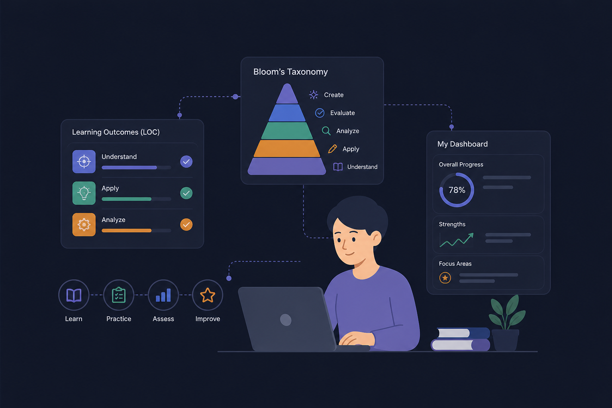

AI for Assessment Moderation
Helping Students Score Better with AI
An intelligent assessment moderation platform using AI for question analysis, coverage, and quality insights — built for educators, students, and institutions.

AI-Powered Analysis
Automatically evaluates exams for syllabus coverage and Bloom's taxonomy levels to ensure quality assessment.
Fair Moderation
Eliminates human bias by providing an objective, data-driven approach to question evaluation and marking.
Scalable Solution
Processes large volumes of exams efficiently, saving valuable time for educators and institutions.